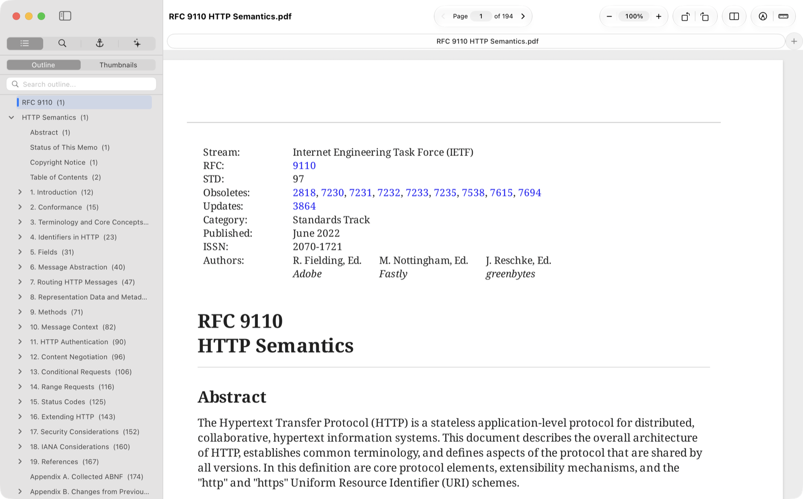
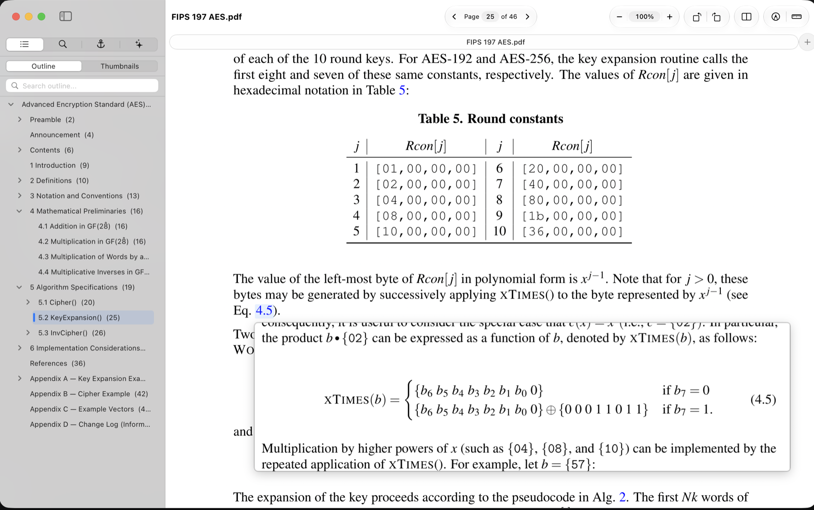
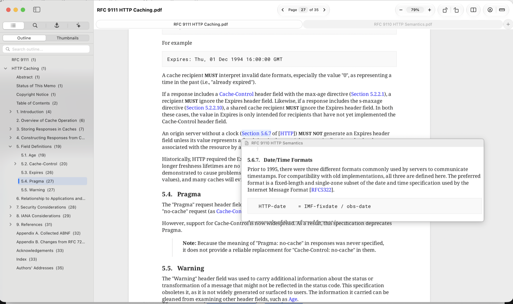
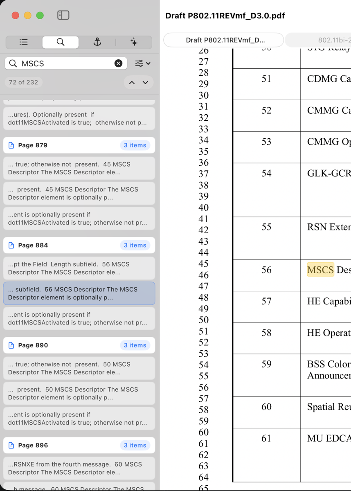
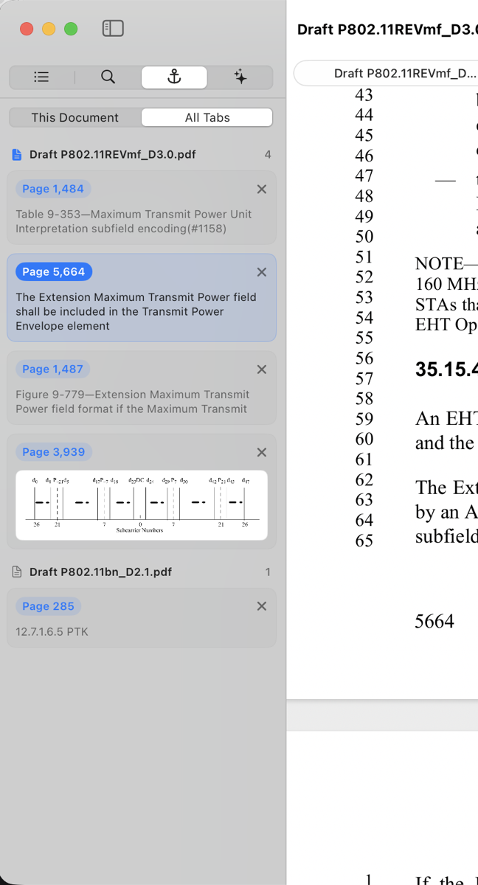
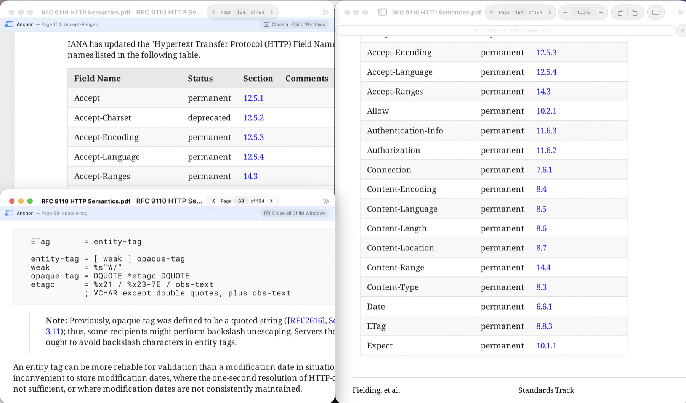
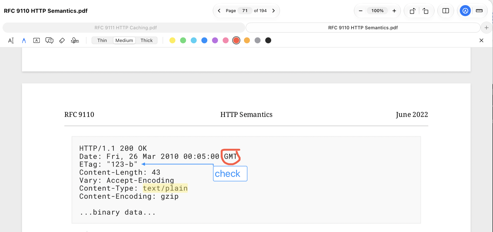

Reads the way you do
Selections stay in one column and skip margin line numbers. Open very long documents without waiting, and carry on where you left off.
Read technical documents without losing your place.
Hold Command over a reference to an equation, figure, table or citation, and see it right where you are. A fast, native PDF reader for papers, specifications, contracts and drawings.
Free and open source. Requires macOS 15 or later on Apple silicon. Open the downloaded file and drag VectorPDF to Applications.

Technical documents send you elsewhere constantly: “see Equation 3”, “as shown in Figure 2”, “[14]”. With Link Peek, hold ⌘ over a link and its target appears beside the pointer. Let go and it's gone.
The preview fits what you're looking at: a few lines for an equation, the opening paragraph for a section, the top of a table or figure.

Standards cite other standards, and contracts refer to their schedules, usually in plain text with no link at all. Open the related documents as tabs, then right-click “Section 8.8.3 of [HTTP]” or “Clause 4.2 of the Master Agreement”. VectorPDF finds that section in the other tab, shows it to you, and takes you there.
Web links work too: if a link points to a document you have open, such as one RFC citing another, it previews there instead of opening your browser.

PDF text is messy. Phrases break across lines, hyphens and dashes vary, and quotes come in several styles. Smart Search treats all of these as the same, so “end-to-end” also finds “end to end”, even across a line break. Results stream into the sidebar as they're found, starting from where you're reading.
Some documents go further and scatter markers through their sentences, so the phrase you want isn't literally on the page: citation numbers like [12], trademark symbols, star paging in court opinions, or comment tags like (#1234) in standards drafts. Tell VectorPDF what to ignore, with a ready-made pattern or your own regular expression, and search reads straight past them while still highlighting the right words on the page.
Scanned pages are covered too: on-device OCR makes them searchable, and you can select and copy their text. When a result matters, right-click it to keep it as an anchor.

Reading a specification means holding several places in your head. Anchors hold them for you. Save a passage, an area of a page, a link's target, a search result or an outline entry, and it becomes a card with a preview in the sidebar. Click it to jump straight back.
Choose All Tabs and you see the anchors from every document in the window together, grouped by document. Click one and VectorPDF switches to that tab and takes you to the place, so you can move between a standard, the draft that amends it and the contract that cites them without losing your thread.

Need a figure or definition in view while you read? Open any anchor in a window of its own. Those windows close along with the document they came from, so there's nothing left to tidy up.

Highlight, underline, draw, and add text boxes, callouts and stamps. Reviewing with others? Add sticky notes and revision clouds, reply to comments, and mark each one with a status. Fill in PDF forms and add a visual signature. Markups are standard PDF annotations, so they appear in other PDF apps too.

Selections stay in one column and skip margin line numbers. Open very long documents without waiting, and carry on where you left off.
Keep related documents together, save them as a named group, and reopen the whole set in one step.
Set a scale, calibrate from a known length, then measure lengths, perimeters, areas and angles, and export a takeoff table.
Redaction removes the text, image pixels and line art from the file, rather than covering them. Find names, numbers and patterns, then review each match.
Reorder, rotate, insert, extract and split pages. Encrypt with AES-256, and export to text, Word, SVG or a flattened PDF.
Ask a question and get an answer with its sources. The Agent is optional, and finds relevant passages on your Mac. It needs macOS 26 or later.
VectorPDF has no accounts, analytics, telemetry or crash reporting. Your documents are processed on your Mac, and nothing from them is sent to the developer. The few things that use the network, such as update checks and the Agent's optional online engines, are listed in full.
VectorPDF is a native app written in Swift, using AppKit and SwiftUI, on Artifex's MuPDF rendering engine. It's free software under the GNU AGPL, so you can read every line.